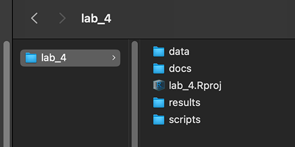
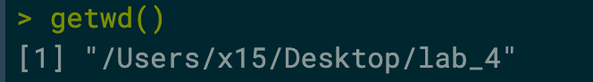
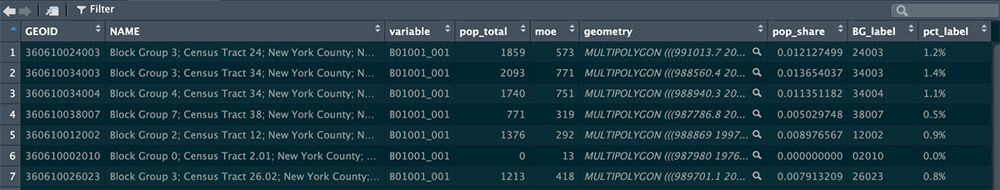
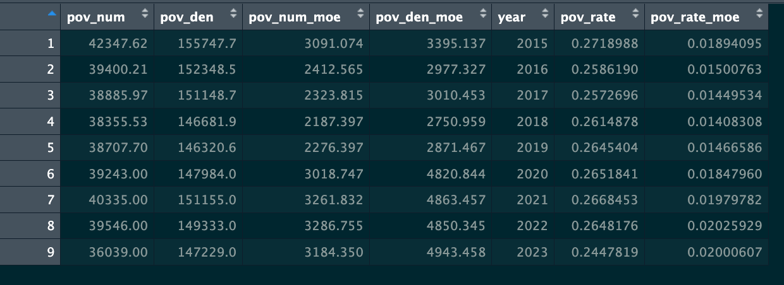

Class 4 Lab: Working with US Census American Community Survey Data
Fall 2025 | Instructor: Stephen Metts | PGUD 5160 - CRN 2247
Preamble
In this fourth demonstration lab, we will repeat the project setup phase of the 3nd week (setting the working directory to lab_4) then move along to accessing US Census data - specifically estimates from the American Community Survey (ACS), followed by visualizing the data at various scales in NYC. This lab can and should be used in conjunction with this week’s assignment 4 deliverable - Assignment 4.
Data
Last week we utilized the a Census API Key located HERE to first Request a KEY, secure that key and then propagate it into the tidycensus pulls that we did for both the lab and assignment. We will utilize the same key this week. Remember if you have set the census_api_key("YOUR KEY GOES HERE", install = TRUE) indeed to TRUE, your key should presist into future sessions. If for some reason you return API key errors, certainly reinstall the key in the early part of this fourth week lab.
While the variables that we will be analyzing this week vary from script to script that we will be using, the underlining data will remain the same except for the time series analyses in which we will access previous years of ACS data. Generally we will be utilizing the following ACS 5-year Estimate for the latest period available which is 2023. The next 5-year estimate will be issued as follows:
The ACS 5-year survey in 2025 will include the new 2020-2024 ACS 5-year Estimates, released in December 2025.
Step 1: Project Management in RStudio for lab_4 (also applicable for assignment_4)
As we have done for previous labs, we will create a lab_4 project directory:

A well-organized folder structure within an RStudio project is crucial. Common conventions include:
data/: For raw data (treated as read-only).
docs/: For documentation or R Markdown files.
results/: For outputs and generated results.
scripts/: For R scripts and analysis pipelines.
docs/: For documentation or R Markdown files.
Step 2:
With the lab_4.Rproj established and the subdirectories for our data analysis established, we can move along to working on the code steps for US Census ACS data.
- Download the first of six scripts (you can also access all six scripts at bottom of lab and download all into
scripts/) Class 4 Lab 4 R Script #1; open this script into your current working environment.
To start, check the current directory and make sure its what you expect:
and
This should return the expected lab_4 project directory.

Your ‘upstream’ path will likely be different than Users/x15… if you are using macOS, your full path would be akin to /Users/your_machine_name/Desktop/lab_4. On macOS, this can also be expressed as ~/Desktop/lab_4:
The tilde ~ is a special character that acts as a shortcut for the current user’s home directory.
This is fine; we want to simply make sure that the directory we created - lab_4 is indeed the directory in which and from which we are and will be working.
This lab, like the course generally, utilizes macOS file path conventions. Windows users need to adjust for this difference between their OS conventions and macOS. Windows utilizes the opposite ‘backward’ slash convention as well as naming explicitly the drive location: Windows: C:\Users\username\Desktop\lab_4 Linux/macOS: /Users/username/Desktop/lab_4
Step 3:
For this week’s lab, we will need tidycensus, tidyverse, sf and the gt package. As we have already loaded tidycensus and tidyverse from lab3, we really only need to install sf and gt:
Script 1: EDA for Manhattan ACS Data 2023 5-Year Survey
Step 1:
Make sure Class 4 Lab 4 R Script #1 is open in your RStudio scripts File>Open File>lab_4>scripts>c4_lab4-script-1.r
In this first script, we will conduct several EDA analyses and resulting visualizations in order to explore some fundamental particularities of the ACS data. To start, we set options to cache the ACS data geometries, and set those geometries to TRUE. This will give us both the data and the geometries. We are, in part, utilizing PUMAs in this first script:
Public Use Microdata Areas (PUMAs) are non-overlapping statistical geographic areas used by the U.S. Census Bureau to release Public Use Microdata Sample (PUMS) data, ensuring each area has at least 100,000 people for privacy protection. PUMAs partition each state into these minimum-population areas, are built from census tracts, and do not cross state boundaries. They are updated following each decennial census
# Get Median Household Income by PUMA (New York County Manhattan)----
options(tigris_use_cache = TRUE, tigris_class = "sf")
# Download ACS data for NY PUMAs
income_puma <- get_acs(
geography = "puma",
variables = "B19013_001", # Median household income
state = "NY",
year = 2023,
survey = "acs5",
geometry = TRUE
)Next we clean and organize the returned data and call it income_clean. We then filter the data for just those PUMAs in Manhattan and utilize ggplot to show those boundaries. Keep in mind that if we set the geometry = FALSE we would not be able to show these boundaries.
census calls via tidycensus can fail - particularly on wifi vs more stable ethernet connections - especially when the geometry coupled with the data is declared. However, if errors are reported, and the data is unable to return, the following script and backup data endpoint can be utilized to load the lab backup data after it is uncompressed.
code line for loading uncompressed data; use setwd() as needed to augment the data paths:
In the next EDA visualization, we will access the variable via the previous variables = "B19013_001" which is the Median Household Income variable. This is a simple structure variable in ACS in that it features just one value per each geographic entity which could be anything from a census block group all the way up to the nation aggregation. Here again we are pulling the PUMAs which for Manhattan is pretty aggregated relative to a census block group or even census tract.
# Bar chart with error bars + MOE labels
ggplot(income_manhattan, aes(x = reorder(NAME, median_income), y = median_income)) +
geom_col(fill = "steelblue") +
geom_errorbar(
aes(ymin = median_income - moe_income, ymax = median_income + moe_income),
width = 0.2, color = "black"
) +
coord_flip() +
labs(
title = "Median Household Income by PUMA (Manhattan, ACS 2023)",
x = "Public Use Microdata Area (PUMA)",
y = "Median Household Income (USD)",
caption = "Source: U.S. Census Bureau, ACS 2023 5-year estimates\nBlack lines show the ACS margin of error (MOE) at 90% confidence."
) +
theme_minimal(base_size = 12) +
theme(
plot.title = element_text(face = "bold", hjust = 0.5),
plot.caption = element_text(size = 9, hjust = 0)
)Next, we will get a glimpse of the type of work we will be doing in Class 5 - actually mapping variables through cartographic visualization:
# Mapping of the Income Distribution across PUMAs ----
# Plot map
ggplot(income_manhattan, aes(fill = median_income)) +
geom_sf(color = "white") +
scale_fill_viridis_c(option = "plasma") +
labs(
title = "Median Household Income by PUMA (Manhattan, ACS 2023)",
fill = "Income (USD)"
) +
theme_minimal()Finally, we will make our first scatterplot of the course using the Bachelor’s degree attainment for the y-axis and the Median Household Income for the x-axis. To start, we make a tidycensus call for median household income (same as previous); a call for bachelor degree attainment and its universe population for those that have some educational attainment and are 25 years old or older. We then filter for just those PUMAs that contain the name Manhattan:
#Multi-Variable Example: Education vs Income
# Pull ACS variables for education & income at PUMA level
edu_income_puma <- get_acs(
geography = "puma",
variables = c(
median_income = "B19013_001", # Median household income
bachelors = "B15003_022", # Count with Bachelor's degree
total_edu = "B15003_001" # Total population 25+ with educational attainment
),
state = "NY",
year = 2023,
survey = "acs5"
) %>%
filter(str_detect(NAME, "Manhattan")) # Keep only Manhattan PUMAsWith the data returned, we have to shape it into the wide format that is best for ggplot and calculate % of population of 25+ with education attainment that do indeed have a bachelor’s degree. Next we create the scatterplot setting the points and the smoothed conditional mean line to show us the relationship between the two variables:
# Reshape & calculate percentage
edu_income_wide <- edu_income_puma %>%
select(GEOID, NAME, variable, estimate) %>%
pivot_wider(names_from = variable, values_from = estimate) %>%
mutate(
bachelors_rate = 100 * bachelors / total_edu
)
# Scatterplot: % with Bachelor's degree vs Median Income
ggplot(edu_income_wide, aes(x = bachelors_rate, y = median_income)) +
geom_point(alpha = 0.7, size = 3) +
geom_smooth(method = "lm", color = "magenta", se = FALSE) +
scale_y_continuous(labels = scales::label_comma()) +
scale_x_continuous(labels = scales::label_percent(scale = 1)) +
labs(
title = "Education vs Income (Manhattan PUMAs, ACS 2023)",
x = "Adults (25+) with Bachelor's Degree (%)",
y = "Median Household Income (USD)",
caption = "Source: U.S. Census Bureau, ACS 2023 5-year estimates"
) +
theme_minimal(base_size = 12) +
theme(plot.title = element_text(face = "bold", hjust = 0.5))Script 2: Mapping Census Block Groups in Manhattan CD03
Step 1:
Make sure Class 4 Lab 4 R Script #2 is open in your RStudio scripts File>Open File>lab_4>scripts>c4_lab4-script-2.r
We can proceed beyond libraries as we have those loaded from the previous script. Here we first suppress scientific notation for plotting and how R potentially handles large numbers:
Next, we are going to use the NYC equivalency file for determining which census tracts fall within NYC Community Districts and NYC Neighborhood Tabulation Areas. For this lab we will be using just one Community District - Manhattan CD 03. This is larger than the NTA ‘Lower East Side’ that we have been using:
Manhattan Community Board 3 encompasses the area of the East Village, Lower East Side, and Chinatown.
In order to determine both census tracts and census block groups that are within Manhattan CD 03, we will first load the NYC .csv file and then script to pull the needed GEOIDs first into numbers, then convert them to character format and use the result to filter our tidycensus data pull.
Make sure to download the equivalency file, uncompress it and place into the data subdirectory:
The equivalency file, as are all other needed files and scripts for this week’s assignment and lab, are located also at the bottom of the class 4 agenda.
First we read in the .csv and name it as an object CD_CT. We then create a vector were we isolate CDTACode that is equal to MN03, coercing it to the character format. To follow, we build an object named tract_meta that pulls apart the GEOID so that it will work with the tidycensus pull in the next step:
# --- INPUT: CSV with tract GEOIDs; produce character vector of 11-digit IDs ---
CD_CT <- read.csv("~/Desktop/2020_Census_Tracts_to_2020_NTAs_and_CDTAs_Equivalency_20250903.csv")
tracts_id <- as.character(CD_CT$GEOID[CD_CT$CDTACode == "MN03"])
tracts_id <- stringr::str_pad(tracts_id, 11, pad = "0")
# --- Build state/county lookup from tract IDs (works across counties/states) ---
tract_meta <- tibble(GEOID = tracts_id) %>%
mutate(state = stringr::str_sub(GEOID, 1, 2),
county = stringr::str_sub(GEOID, 3, 5)) %>%
distinct(state, county)Next, we pass tract_meta along to the tidycensus pull and extract the data for Total Population:
# --- Pull ACS 2023 5yr total population for BLOCK GROUPS with geometry (tidycensus only) ---
acs_bg_sf <- purrr::pmap_dfr(tract_meta, function(state, county) {
get_acs(
geography = "block group",
variables = "B01001_001", # total population (use "DP05_0001E" if you prefer Data Profile)
survey = "acs5",
year = 2023,
state = state,
county = county,
geometry = TRUE,
cache_table = TRUE
)
})Before plotting, we then make sure we are just dealing with just block groups within Manhattan CD03. In the previous tidycensus pull, we do get census block groups, but we get them for all of Manhattan where the state is 36 and the county is 061. Here we isolate the block groups that we need and drop everything else. Finally, we do a CRS transformation (more on this as we begin mapping with R soon in upcoming classes):
# --- Keep only BGs whose first 11 digits (tract) are in the target set; compute labels & shares ---
bg_plot_sf <- acs_bg_sf %>%
filter(stringr::str_sub(GEOID, 1, 11) %in% tracts_id) %>%
distinct(GEOID, .keep_all = TRUE) %>%
rename(pop_total = estimate) %>%
mutate(
pop_total = tidyr::replace_na(pop_total, 0),
pop_share = pop_total / sum(pop_total, na.rm = TRUE),
BG_label = stringr::str_sub(GEOID, -5),
pct_label = scales::percent(pop_share, accuracy = 0.1)
) %>%
# Project to planar CRS to avoid label warnings on lon/lat
st_transform(2263) # EPSG:2263 (NYC-friendly)Before proceeding, inspect the resulting dataframe bg_plot_sf:

The first plot maps out each of the census block group geometries in the Manhattan CD03. This gives us a sense of how large these small area census geometries are relative to the CD as a whole:
# --- Map 1: label each CBG with last 5 digits of GEOID ---
ggplot(bg_plot_sf) +
geom_sf(size = 0.2, fill = "white", color = "black") +
geom_sf_text(aes(label = BG_label), size = 2.5, color = "darkred", check_overlap = TRUE) +
coord_sf(expand = FALSE) +
labs(
title = "Census Block Groups for Manhattan CD03 Tracts",
subtitle = "Labels are last 5 digits of GEOID",
caption = "Source: US Census Bureau ACS 2023 Boundaries"
) +
theme_void(base_size = 11)Finally, we revise the plot so that the percentage of the total population of CD03 is proportioned to each census block group. This gives us a sense of how many people relative to the whole are contained in each study area census block group. Pay particular attention to the block groups that have zero % of the total population. These geometries often occur over a large portion of water bodies, and they hold little to no population. These can be a problem in our analyses when mapping at these small area geographies. We’ll be aware of this issue going forward in our mapping work in upcoming classes.
# --- Map 2: label each CBG with % of total population (within selection) ---
ggplot(bg_plot_sf) +
geom_sf(size = 0.2, fill = "white", color = "black") +
geom_sf_text(aes(label = pct_label), size = 2.5, color = "darkred", check_overlap = TRUE) +
coord_sf(expand = FALSE) +
labs(
title = "Census Block Groups for Manhattan CD03 Tracts",
subtitle = "% of total population across selected BGs (ACS 2023 5-year)",
caption = "Source: US Census Bureau; tidycensus"
) +
theme_void(base_size = 11)Script 3 & 4: Working with ACS Data Across Time (Time Series Analysis) + Comparison Chart for Poverty Rates
Step 1:
To start, make sure both script #3 and script #4 are downloaded and placed into the scripts/ subdirectory:
Make sure Class 4 Lab 4 R Script #3 is open in your RStudio scripts File>Open File>lab_4>scripts>c4_lab4-script-3.r
Follow with Class 4 Lab 4 R Script #4; open in your RStudio scripts File>Open File>lab_4>scripts>c4_lab4-script-4.r
Step 2:
Load Script #3. We’ll notice at the top of the script we once again create the CD_CT object specifying MN03. However, this time we also need to load in a crosswalk table from NHGIS which produces many products related to the harmonization of previous census data and its geometries to current geometries. We need to do this harmonization because our time series is going to date back to 2015, and anything before the 2020 census is going to be mapped to the 2010 census geometries. So we need to ‘harmonize’ the changes, and that is where the crosswalk table comes into practice.
NHGIS crosswalk tables allow users to compare and combine U.S. Census Bureau summary data from different geographic units and time periods by providing interpolation weights that allocate data from source zones (e.g., older blocks) to target zones (e.g., newer tracts).
Make sure to place the crosswalk table (fully uncompressed) into your /data subdirectory; its is from here that we call the table into R as a separate object:
-Download Location for NHGIS crosswalk table
After calling both the equivalency file and the crosswalk table, we have a helper function makes sure we are using the correct columns and naming from the crosswalk table. We then proceed to organizing the table so that its going to work with the tidycensus data that we are going to download. For each 2010 tract, there’s a match with the 2020 tract. The column pop_wt is either going to be 1 for a ‘one-to-one match’ or its going to a smaller value which factors the 2010 tracts by a population weight (not for square area land) to be a proportional match with the 2020 tracts. Keep in mind this table is for census tracts, not census block groups. We are mapping here to census tracts alone.
Before proceeding, the script then develops an approach to the MOE - Margin of Error columns in the ACS data. Once done, it makes a determination if the incoming data is from before the 2020 census or after the 2020 census. If it is before, then the crosswalk table has to be applied; if its after, the data is left alone without any reapportionment.
Step 3:
Finally, we get to the critical data pull.
# --- Run for 2015–2023 & inspect ---
years <- 2015:2023
ts_poverty_xwalk <- purrr::map_dfr(years, fetch_year) |>
arrange(year)The resulting object ts_poverty_xwalk is just those particular census tracts - aggregated to just one value - across years 2015 to 2023.

Step 4:
Finally, we plot the results as a Time Series, tracking the poverty rate across time in Manhattan CD 03:
# --- Time Series Plot ---
ggplot(ts_poverty_xwalk, aes(x = year, y = pov_rate)) +
geom_ribbon(
aes(ymin = pmax(0, pov_rate - pov_rate_moe),
ymax = pmin(1, pov_rate + pov_rate_moe)),
alpha = 0.2
) +
geom_line() +
geom_point(size = 2) +
scale_x_continuous(breaks = years) +
scale_y_continuous(labels = scales::percent_format(accuracy = 0.1), limits = c(0, 1)) +
labs(
title = "Poverty Rate (ACS 5-year) for MN03 (Aligned to 2020 Tracts via NHGIS Crosswalk)",
subtitle = "Numerator=B17001_002; Denominator=B17001_001 • Ribbon=90% MOE\n2015–2019 reallocated from 2010 tracts; 2020–2023 native 2020 tracts",
x = "ACS 5-year (end year)",
y = "Poverty rate",
caption = "Source: U.S. Census Bureau (ACS 5-year, tidycensus); NHGIS 2010→2020 tract crosswalk"
) +
theme_minimal(base_size = 12)
Step 5 (Poverty Rate Comparison Chart:
With Class 4 Lab 4 R Script #4 loaded, we will turn to an approach that presents different levels of aggregation for the same variable at one ‘moment in time’. In combination with a time series plot, this approach allows for comprehensive understanding not only temporally, but geographically across scales.
To start, make sure sure the gt library is installed and loaded in addtion to tidyverse and tidycensus:
Next, we will be plotting to the PUMA for CD03 as we did in the earlier EDA analysis. For your assignment, you may want to choose a different PUMA in which case you need to choose the correct GEOID identifier. You can do this via the following linked PDF:
Next, we make a few basic settings that then feed into the tidycensus pull which returns the object dataframe puma_df:
# ---- PUMA: NY PUMAs then filter to 3604103 (suffix 04103) ----
puma_df <- get_acs(
geography = "public use microdata area",
variables = var_povpct,
survey = "acs5",
year = acs_year,
state = "NY",
output = "wide",
geometry = FALSE,
cache_table = TRUE
) %>%
filter(GEOID == puma_geoid7 | GEOID == puma_code5 | stringr::str_sub(GEOID, -5, -1) == puma_code5) %>%
transmute(
geography = "PUMA 3604103 (Manhattan)",
estimate = S1701_C03_001E, # percent
moe = S1701_C03_001M # percentage points (90% MOE)
)
This runs through 3 more aggregations - Manhattan, State of NY then the Nation itself. Once complete, the comparison table is made - compare_tbl. Finally the gt library build a nicely formatted table and presents this poverty_table so that we can easily compare the PUMA Poverty Rate with MOE to all the other geographic aggregations in the chart.
(Extra - Time Permitting) Script 5 & 6: Working with ACS Data Across Time (Time Series Analysis) + Comparison Chart for Rent Burden
To start, make sure both script #5 and script #6 are downloaded and placed into the scripts/ subdirectory:
Make sure Class 4 Lab 4 R Script #5 is open in your RStudio scripts File>Open File>lab_4>scripts>c4_lab4-script-5.r
Follow with Class 4 Lab 4 R Script #6; open in your RStudio scripts File>Open File>lab_4>scripts>c4_lab4-script-6.r
These scripts mimic the form of script #3 and script #4. The difference comes into play with the way in which Rent Burden is calculated as opposed to that of Poverty Rate. In the case of the Poverty Rate calculation, its a simple formula where the numerator is the number of persons that are in the poverty bracket, and the denominator is the total persons for whom poverty was accessed. Rent Burden, on the other hand, contains various levels of burden. In order to utilize a common threshold of >=30% of income, we need to combine several of the Rent Burden brackets. The script calls these variables, then sums them and does the MOE calculations resulting in just one value per geography, per year that is plotting in the same fashion as the time series for the Poverty Rate.
In the case of the comparison table, the same difference applies: the Rent Burden tabulation is made then provided for the various geographic aggregations that are shown in the final comparison table.
Saving Data for Assignment 4:
Concluding Remarks
In this fourth demonstration lab, we saw some of the various plot and chart options that are available to us via ggplot. While lookup and crosswalk tables significantly complicate both the logic and code approach to our final goal to plot across time, this is the better, more accurate approach than one that does not factor in the changes from early years to the current years. In this week’s fourth assignment, many of the steps we’ve covered here will be explored further for a specific purpose for a community district in NYC. For those in Studio 1, the purpose of the assignment is to get familiar with both the time series and comparison chart approach as this can indeed be one of the upcoming deliverables for Studio 1 assignment #2.
Access this lab as needed for review and preparation for assignment 4.